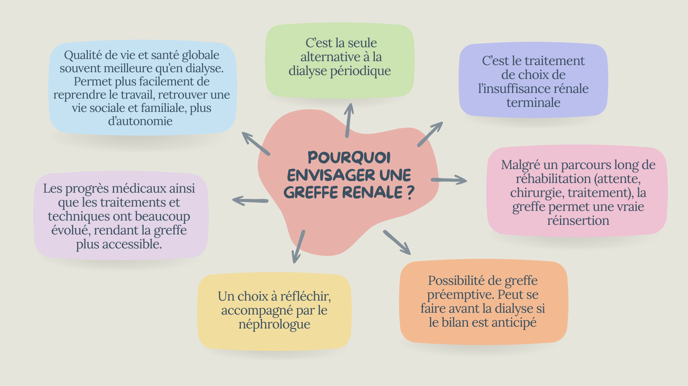
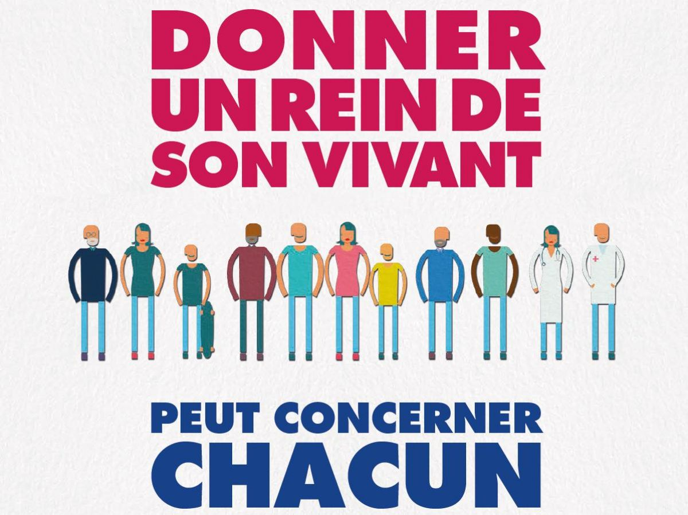
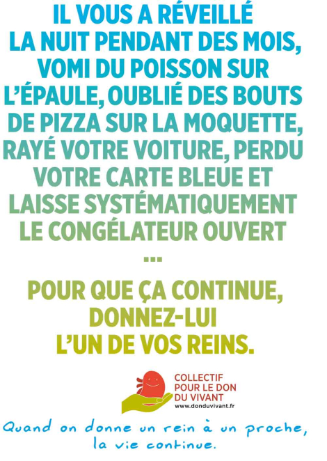
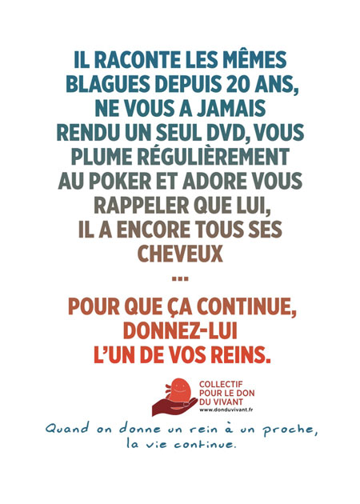
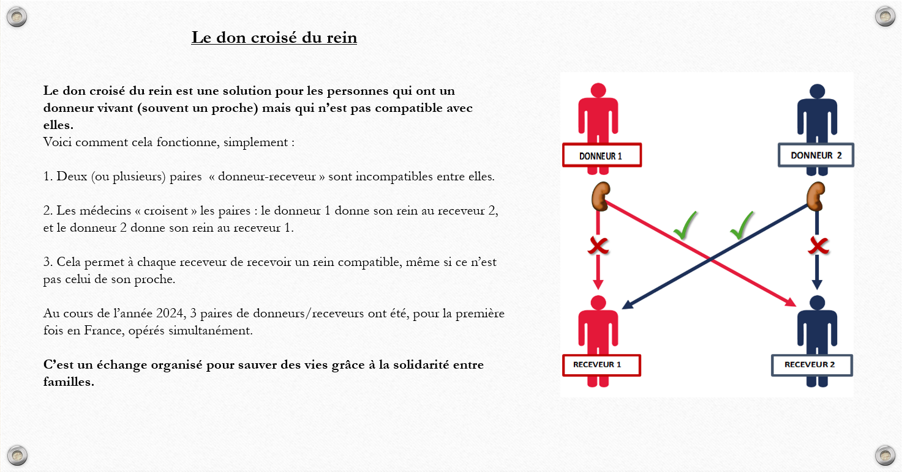

Qu’est-ce que le don d’organe ?
Le don d'organes et de tissus est un acte de générosité et de solidarité entièrement gratuit.
En France, la majorité des greffes rénales sont réalisées à partir de personnes décédées, bien que le don d’un vivant soit également possible.
Toute l’activité de transplantation, qu’il s’agisse de donneurs vivants ou décédés, est strictement encadrée par la loi et par l’Agence de la biomédecine.
Le cadre légal : la présomption de consentement
En France, la loi repose sur le principe du consentement présumé :
"Toute personne est considérée comme donneuse d’organes, sauf si elle a exprimé son refus de son vivant."
Ce refus peut être exprimé de deux manières :
- En faisant acter son opposition en s'inscrivant au Registre National de refus.
- En exprimant son opposition oralement auprès de ses proches .
En l’absence d’opposition, les organes ou tissus peuvent être prélevés après le décès.
L'intêret d'une greffe rénale
La greffe de rein : pour qui et à quels risques ?
Qui peut bénéficier d'une greffe de rein ?
Quels sont les risques d'une greffe de rein ?
Qu’est ce que le don d’organe à partir de donneur vivant ?
L’être humain peut vivre en bonne santé avec un seul rein. C’est sur ce principe que repose le don de rein à partir d’un donneur vivant.

Le don vivant consiste à ce qu’un proche (souvent un membre de la famille ou un ami) donne l’un de ses deux reins pour vous permettre d’être greffé.
Ce don est strictement encadré par la loi et nécessite une évaluation médicale et psychologique rigoureuse pour le donneur et le receveur.
Les conditions médicales à réunir sont très strictes : le candidat au don fait l’objet d’un bilan médical complet comportant des examens cliniques, radiologiques et biologiques. On vérifie notamment s’il peut subir une intervention chirurgicale sans risque et s’il est porteur ou non de certaines maladies transmissibles.
Après son don, il bénéficiera ensuite d’un suivi annuel de sa fonction rénale.
Qui peut faire un don vivant ?
Le donneur doit avoir un lien de sang ou affectif avec le receveur :
Épouse
Mari

Famille

Amis proches (ayant un lien affectif étroit et stable depuis un minimum de 2 ans)
Les avantages et inconvénients du don vivant :
-
1- Meilleurs résultats à long terme :
Les greffes à partir d’un donneur vivant fonctionnent souvent plus longtemps et mieux que celles provenant d’un donneur décédé (environ 3/4 des greffons prélevés sur donneur vivant sont encore fonctionnels 10 ans après la greffe).
2- Programmation de la greffe :
Elle peut être planifiée, ce qui évite l’attente parfois longue sur la liste de greffe.
3- Moins de temps en dialyse (ou pas du tout) :
Cela peut améliorer la qualité de vie et réduire certaines complications liées à la dialyse. Pour certains malades, du fait de la rareté de leur groupe sanguin ou de la présence d’anticorps (transfusions, grossesses ou greffes antérieures), la greffe à partir de donneur vivant peut être la seule possibilité dans un délai raisonnable.
4- Greffe préemptive possible :
Elle peut avoir lieu avant même que la dialyse ne commence, ce qui est bénéfique pour la santé globale.
-
1- Risque pour le donneur :
Même si le don est généralement sûr, toute chirurgie comporte des risques (infections, douleurs, complications rares).
2- Charge émotionnelle :
Cela peut créer une pression psychologique ou des tensions dans la relation donneur-receveur.
3- Incompatibilité possible :
Le donneur doit être médicalement compatible. La recherche de la meilleure compatibilité est essentielle.
4- Processus long et encadré :
L’évaluation peut prendre du temps, avec des examens nombreux pour garantir la sécurité du don.

Le bilan pré-greffe
Le bilan pré-greffe se constitue d'un ensemble d'examens qui permettent de vérifier que votre état de santé va permettre la greffe. Celui-ci est réalisé par le néphrologue traitant en lien avec le centre de transplantation choisi.
Les différents examens a réaliser :
Bilan vasculaire et urologique
Bilan pulmonaire
Bilan radiologique et échographique
Bilan cardiologique
Bilan dermatologique
Bilans sanguins
Bilan dentaire
L’inscription sur liste d’attente
L’inscription a lieu après le bilan pré-greffe.Le néphrologue traitant, synthétise le dossier et adresse le patient au centre de transplantation.
Le centre de transplantation, en concertation valide la candidature du patient.
Si elle est favorable, le coordinateur de transplantation envoie les informations à l’Agence de la biomédecine, où le patient est inscrit sous un numéro anonyme (numéro Cristal). Une lettre de confirmation d'inscription est ensuite envoyée au patient.
L’attribution d’un greffon se fait selon un barème de points et la compatibilité avec le donneur.